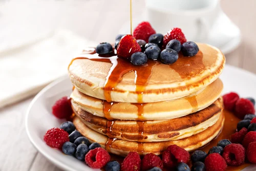

Ingredientes
- 1 xícara de farinha
- 1 ovo
- 1/2 xícara de leite
- 1 colher de sopa de açúcar
- 1 colher de chá de fermento
Modo de preparo
1. Em uma tigela grande, adicione a farinha, o açúcar e o fermento. Misture bem esses ingredientes secos.
2. Em outra tigela, bata o ovo e adicione o leite, mexendo até que a mistura fique homogênea.
3. Faça um buraco no centro dos ingredientes secos e despeje a mistura líquida. Misture tudo com um fouet ou colher até formar uma massa sem grumos.
4. Aqueça uma frigideira antiaderente em fogo médio e unte com um pouco de manteiga ou óleo. Quando estiver bem quente, coloque pequenas porções de massa na frigideira.
5. Cozinhe por cerca de 2-3 minutos de cada lado, até que as bordas da panqueca fiquem secas e o centro comece a formar bolhas.
6. Vire a panqueca com uma espátula e cozinhe o outro lado até dourar. Repita o processo até terminar a massa.
7. Sirva as panquecas quentes com mel, frutas frescas ou calda de chocolate, conforme sua preferência.